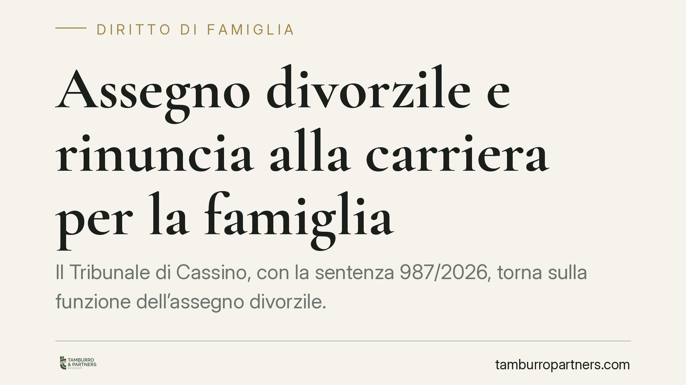

Assegno divorzile e rinuncia alla carriera per la famiglia
Il Tribunale di Cassino, con la sentenza 987/2026, torna sulla funzione dell'assegno divorzile. Chi ha rinunciato a opportunità professionali per dedicarsi alla famiglia può ottenere il contributo anche senza versare in stato di bisogno. Condizione: provare il dislivello reddituale derivato dalle scelte condivise durante il matrimonio. Una pronuncia che conferma l'orientamento della Cassazione a Sezioni Unite.

Il caso deciso dal Tribunale di Cassino
La sentenza 987/2026 affronta una situazione frequente: un coniuge che, durante il matrimonio, ha accantonato o ridotto l'attività lavorativa per occuparsi della casa e dei figli. Al momento del divorzio si trova con redditi e prospettive professionali sensibilmente inferiori rispetto all'altro coniuge.
Il Tribunale ha riconosciuto l'assegno divorzile valorizzandone la funzione compensativa e perequativa. In altre parole: l'assegno non serve solo a sostenere chi non ha di che vivere, ma anche a riequilibrare uno squilibrio economico prodotto dalle scelte comuni della coppia.
Inquadramento normativo
La norma di riferimento è l'articolo 5, comma 6, della Legge 898/1970 (legge sul divorzio). La disposizione prevede l'attribuzione di un assegno quando il coniuge richiedente non disponga di mezzi adeguati o non possa procurarseli per ragioni oggettive.
Il punto decisivo è l'interpretazione di "mezzi adeguati". Le Sezioni Unite della Cassazione (sentenza 18287/2018) hanno superato il vecchio criterio del solo "tenore di vita" matrimoniale, affermando la natura composita dell'assegno: assistenziale, ma anche compensativa e perequativa.
La funzione compensativa riconosce il contributo dato dal coniuge alla formazione del patrimonio comune e personale dell'altro. Quella perequativa mira a correggere lo squilibrio reddituale generato dalla divisione dei ruoli concordata durante l'unione. Il Tribunale di Cassino applica fedelmente questo quadro.
Cosa cambia per chi chiede l'assegno
La pronuncia chiarisce che lo stato di bisogno non è il presupposto esclusivo. Chi ha rinunciato a una carriera per ragioni familiari può accedere all'assegno anche avendo una qualche fonte di reddito, purché inferiore a quella che avrebbe plausibilmente conseguito senza quel sacrificio.
Attenzione, però: non basta affermarlo. Serve la prova. Il coniuge richiedente deve dimostrare due elementi distinti.
Il primo è l'esistenza del dislivello reddituale tra le posizioni dei due coniugi al momento del divorzio. Il secondo, più delicato, è il nesso causale tra quel dislivello e le scelte condivise durante il matrimonio: la rinuncia al lavoro, la riduzione dell'impegno professionale, il trasferimento per seguire la carriera dell'altro.
Senza la prova di questo collegamento, la domanda rischia il rigetto. La giurisprudenza non riconosce l'assegno in via automatica a chi guadagna meno: pretende la dimostrazione del sacrificio e del suo effetto economico.
Cosa fare in concreto
- Ricostruite la storia professionale. Raccogliete buste paga, contratti, curriculum, documenti che attestino percorsi di carriera interrotti o rinunciati durante il matrimonio.
- Documentate le scelte comuni. Verbalizzate, ove possibile, le decisioni condivise: dimissioni per accudire i figli, trasferimenti a seguito del coniuge, passaggio al part-time.
- Quantificate il dislivello. Predisponete un confronto tra la situazione reddituale attuale e quella ragionevolmente raggiungibile senza la rinuncia, con riferimenti a dati di settore.
- Conservate la prova del contributo familiare. Testimonianze, documenti scolastici dei figli, spese sostenute: tutto ciò che dimostri l'impegno dedicato alla gestione domestica.
- Valutate i tempi. Consigliamo di avviare la raccolta documentale prima dell'instaurazione del giudizio, quando l'accesso a certa documentazione è ancora agevole.
Un orientamento da leggere con prudenza
La sentenza di Cassino si inserisce in un filone consolidato, ma ogni decisione resta legata ai fatti del singolo caso. L'esito dipende dalla qualità della prova offerta e dalla concreta ricostruzione delle dinamiche familiari.
Non esiste un diritto automatico all'assegno per chi ha lasciato il lavoro: esiste la possibilità di ottenerlo dimostrando il sacrificio e le sue conseguenze economiche. La distinzione è sostanziale e incide direttamente sulla strategia processuale.
Consigliamo a chi si trovi in questa situazione di impostare per tempo l'istruttoria probatoria, con l'assistenza di un professionista, evitando di affidarsi a valutazioni sommarie sul mero divario di reddito.
---
*Contributo informativo a cura di Tamburro & Partners - Avv. Giuseppe Tamburro. Non costituisce parere legale.*
Ogni famiglia ha il suo equilibrio.
Separazione, divorzio, affidamento, assegno: se vuoi un confronto riservato su una specifica situazione, scrivi allo studio. Ti rispondiamo entro un giorno lavorativo.